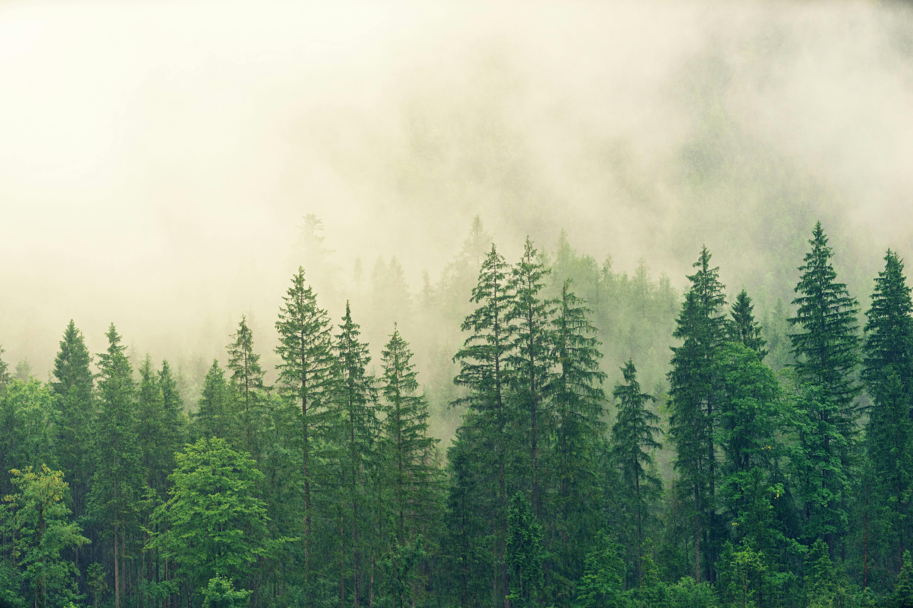

Temperate rainforest in the Pacific Northwest
Forests cover about 31% of Earth's land area and are home to approximately 80% of terrestrial biodiversity. These complex ecosystems range from the tropical rainforests near the equator to the boreal forests circling the Arctic. Each forest type creates unique habitats, much like how desert ecosystems develop specialized life forms adapted to arid conditions.
The Amazon rainforest alone produces 20% of Earth's oxygen and stores an estimated 100 billion metric tons of carbon in its biomass. This "green ocean" influences global weather patterns through its massive evapotranspiration, creating "flying rivers" of moisture that travel through the atmosphere - a process similar to how ocean currents distribute heat around the planet.
Forest Layers: A Vertical Ecosystem
Forests organize themselves into distinct vertical layers, each supporting different life forms:
- Emergent Layer: The tallest trees (up to 200+ feet) that rise above the canopy Canopy Layer: The dense roof formed by tree crowns, home to 90% of forest organisms
- Understory: Shade-tolerant shrubs and young trees waiting for canopy openings
- Forest Floor: Decomposing matter that nourishes new growth, similar to how meadow soils develop
- Root Layer: The "wood wide web" of fungal networks connecting trees underground
This vertical stratification creates microclimates with different humidity, light, and temperature conditions, allowing hundreds of species to coexist in the same area. Some animals, like the harpy eagle, spend their entire lives in the canopy without ever descending to the ground, while others like the cave-dwelling bats use forests as hunting grounds.
Forest Types Around the World
Forests vary dramatically by climate and geography:
Tropical Rainforests
Found near the equator with year-round warmth and rainfall. These forests contain half of all plant and animal species despite covering just 6% of Earth's land. The competition for light leads to incredible adaptations like buttress roots and epiphytes (plants that grow on other plants).
Temperate Forests
Experience four distinct seasons with deciduous trees that lose leaves in winter. These forests often border river systems and feature a rich understory of plants that bloom in spring before the canopy leafs out.
Boreal Forests (Taiga)
The world's largest terrestrial biome, circling the Arctic. Dominated by conifers adapted to cold winters, these forests grow in thin soils over permafrost. The extreme conditions create ecosystems very different from those near volcanic regions with mineral-rich soils.
The Hidden Network Beneath Our Feet
Through mycorrhizal networks, trees share nutrients and chemical signals. "Mother trees" can recognize their kin and preferentially send them resources. This fungal internet connects entire forests in what scientists call the "wood wide web." Some forests are so interconnected that they function almost as single organisms, much like coral reefs in the ocean.
Forests also play crucial roles in water cycles. Their canopies intercept rainfall, reducing erosion, while their roots help water infiltrate deep into aquifers. A single large tree can transpire 100 gallons of water daily, creating localized humidity that often leads to cloud formation.
Threats and Conservation
Despite their importance, forests face unprecedented threats:
- Deforestation claims 10 million hectares annually (about 27 soccer fields per minute)
- Climate change is altering growth patterns and increasing wildfires
- Invasive species disrupt delicate ecological balances
- Fragmentation creates isolated "islands" of habitat
Conservation efforts include creating protected areas, sustainable forestry practices, and reforestation projects. Some initiatives combine forest protection with mountain conservation to preserve entire watersheds.
Explore how forests transition into other ecosystems like alpine meadows at tree lines or the riparian forests along canyon rivers.
Return to homepage to discover more natural wonders.